Key Sections of this Talk
- The 5 Min Short Version of the Entire Blog
- Introduction to AWS Bedrock
- Control Plane & Data Plane Endpoints
- Real World Bedrock Architectures
- Guardrails
- Conclusion
Disclaimer:
* The AWS CLI commands are representational. Kindly checkaws <bedrock-api> <command> helpto confirm the workings.
* These are notes for learning and I have used LLMs to tweak my messaging or make it crisper/better
* Sources are attributed to all external pics for clarity. Pics with no sources are Author’s
▓▓▓▓▓▓▓▓▓▓▓▓▓▓▓▓▓▓▓▓▓▓▓▓▓▓▓▓▓▓▓▓▓▓▓▓▓▓▓▓▓▓▓▓▓▓▓▓▓▓▓▓▓▓▓▓▓▓▓▓▓
▓▓▓▓▓▓▓▓▓▓▓▓▓▓▓▓▓▓▓▓▓ End of Section ▓▓▓▓▓▓▓▓▓▓▓▓▓▓▓▓▓▓▓▓▓▓▓▓
▓▓▓▓▓▓▓▓▓▓▓▓▓▓▓▓▓▓▓▓▓▓▓▓▓▓▓▓▓▓▓▓▓▓▓▓▓▓▓▓▓▓▓▓▓▓▓▓▓▓▓▓▓▓▓▓▓▓▓▓▓0. The 5 Min Short Version of the Entire Blog
AWS Bedrock APIs - Simplified Overview
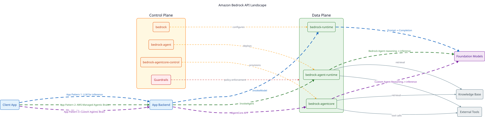
- Tip: Right-click and see the above pic in new tab for full-screen view
The Three Main Bedrock Architecture Patterns
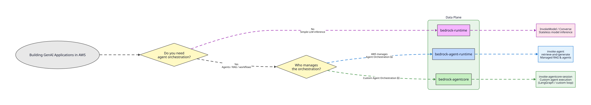
- Tip: Right-click and see the above pic in new tab for full-screen view
Real World Architecture Patterns
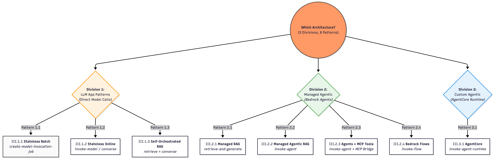
In a hurry 🏃💨? What I will be covering here…
Bedrock APIs falling under 2 buckets
- Control Plane APIs: Administrative APIs / define what exists
- Data Plane APIs: Primary function of the service (invoking the model/agent/flow)
Three common Bedrock architecture patterns:
- LLM App → Direct model invocation
- Managed Agentic App → Bedrock Agents
- Custom Agentic App → AgentCore runtime
▓▓▓▓▓▓▓▓▓▓▓▓▓▓▓▓▓▓▓▓▓▓▓▓▓▓▓▓▓▓▓▓▓▓▓▓▓▓▓▓▓▓▓▓▓▓▓▓▓▓▓▓▓▓▓▓▓▓▓▓▓
▓▓▓▓▓▓▓▓▓▓▓▓▓▓▓▓▓▓▓▓▓ End of Section ▓▓▓▓▓▓▓▓▓▓▓▓▓▓▓▓▓▓▓▓▓▓▓▓
▓▓▓▓▓▓▓▓▓▓▓▓▓▓▓▓▓▓▓▓▓▓▓▓▓▓▓▓▓▓▓▓▓▓▓▓▓▓▓▓▓▓▓▓▓▓▓▓▓▓▓▓▓▓▓▓▓▓▓▓▓I. Introduction to AWS Bedrock
What is Amazon Bedrock?
Amazon Bedrock is a fully managed, serverless AWS service that exposes:
- Foundation Models (claude, titan, etc.,)
- Agent Frameworks
bedrock-agent- an opinionated framework from AWS for Agent Orchestration (AWS owns the orchestration)bedrock-agentcore, etc., - a modular frameowkr where you own the orchestration
- Safety Controls
…through a unified API surface.
What Can You Build?
Types of AI Apps: - GenAI Deterministic or Agentic Workflows - Conversational AI Applications
What Bedrock offers:
Infrastructure (serverless) + Models (Foundation Models)
In a Model Inference API call, Bedrock Service allows you to …
| Feature | Description |
|---|---|
| Choose a model | Select from available FMs |
| Inference Parameters | temperature, top_p, model-specific settings |
| Model Inputs | Including Prompt |
| Output Config | Response formatting |
| Guardrails | For both query and output |
Additional Capabilities
- Run batch jobs
- Async request calls
- Fine-tuning models
- Provisioned throughput for dedicated capacity
▓▓▓▓▓▓▓▓▓▓▓▓▓▓▓▓▓▓▓▓▓▓▓▓▓▓▓▓▓▓▓▓▓▓▓▓▓▓▓▓▓▓▓▓▓▓▓▓▓▓▓▓▓▓▓▓▓▓▓▓▓
▓▓▓▓▓▓▓▓▓▓▓▓▓▓▓▓▓▓▓▓▓ End of Section ▓▓▓▓▓▓▓▓▓▓▓▓▓▓▓▓▓▓▓▓▓▓▓▓
▓▓▓▓▓▓▓▓▓▓▓▓▓▓▓▓▓▓▓▓▓▓▓▓▓▓▓▓▓▓▓▓▓▓▓▓▓▓▓▓▓▓▓▓▓▓▓▓▓▓▓▓▓▓▓▓▓▓▓▓▓II. Control Plane & Data Plane Endpoints
API Plane Separation
AWS consistently separates services into:
| Plane | Purpose |
|---|---|
| Control Plane | Configure, create, manage things |
| Data Plane | Run workloads, handle high-volume traffic |
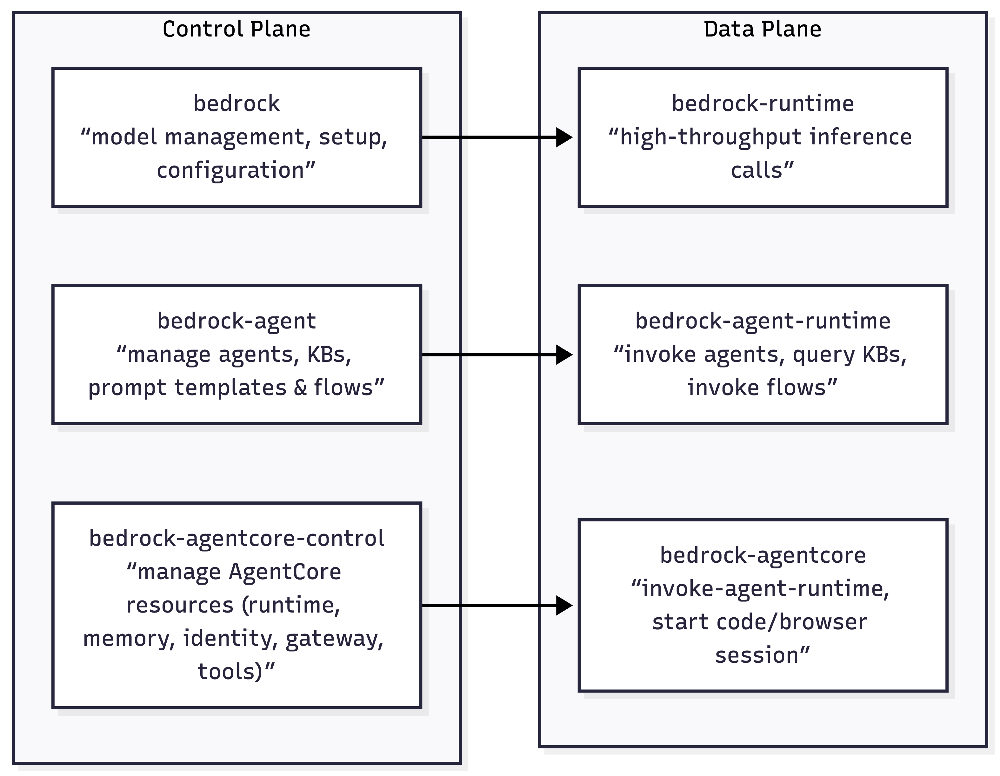
| S No | Endpoint | Plane | Purpose | Who uses this? |
|---|---|---|---|---|
| 1 | bedrock |
Control plane | Model management, setup, configuration | Platform / ML / Infra teams defining models, capacity, and governance |
| 2 | bedrock-runtime |
Data plane | High-throughput inference calls | Application developers building stateless LLM-powered features |
| 3 | bedrock-agent |
Control plane | Manage agents, KBs, prompt templates & flows | Platform / ML teams designing managed agent & RAG architectures |
| 4 | bedrock-agent-runtime |
Data plane | Invoke agents, query KBs, invoke flows | App developers consuming managed agents, RAG, and flows at runtime |
| 5 | bedrock-agentcore-control |
Control plane | Manage AgentCore resources (Runtime, Memory, Identity, Gateway, Tools) | Advanced platform / agent teams provisioning custom agent runtimes |
| 6 | bedrock-agentcore |
Data plane | Run agent sessions, tools (Browser/Code-Interpreter), Memory I/O | Teams running custom agent runtimes (LangGraph / custom planners / tools) |
1) bedrock — Control Plane
Model management, setup, configuration
- This is the control plane for core model management.
- It includes APIs used to manage models, start fine-tuning model jobs, and batch inferencing, among others
1.1 Discover Models & Metadata
# List available foundation models
aws bedrock list-foundation-models --region us-east-1
# Inspect a specific model
aws bedrock get-foundation-model \
--model-identifier anthropic.claude-3-5-sonnet-20240620-v1:0 \
--region us-east-11.2 Configure account/Region‑level invocation logging
# Enable model invocation logging to S3
aws bedrock put-model-invocation-logging-configuration \
--logging-config '{
"s3Config": { "bucketName": "my-bedrock-logs" },
"textDataDeliveryEnabled": true,
"imageDataDeliveryEnabled": true
}' \
--region us-east-11.3 Provisioned Throughput
# Create Provisioned Throughput (dedicated capacity)
aws bedrock create-provisioned-model-throughput \
--model-id anthropic.claude-3-5-sonnet-20240620-v1:0 \
--provisioned-model-name my-pt-sonnet \
--model-units 1 \
--commitment-duration OneMonth \
--region us-east-11.4 Fine-Tuning
# Submit a fine-tuning job
aws bedrock create-model-customization-job \
--job-name ft-haiku-faq \
--base-model-identifier anthropic.claude-3-haiku-20240307-v1:0 \
--training-data-config '{"s3Uri":"s3://my-train-bucket/data/"}' \
--region us-east-1
1.5 Batch Inference
# Create batch inference job
aws bedrock create-model-invocation-job \
--job-name faq-batch-jan \
--model-id anthropic.claude-3-5-sonnet-20240620-v1:0 \
--input-data-config '{"s3InputDataConfig":{"s3Uri":"s3://my-batch/input/"}}' \
--region us-east-1▓▓▓▓▓▓▓▓▓▓▓▓▓▓▓▓▓▓▓▓▓▓▓▓▓▓▓▓▓▓▓▓▓▓▓▓▓▓▓▓▓▓▓▓▓▓▓▓▓▓▓▓▓▓▓▓▓▓▓▓▓
▓▓▓▓▓▓▓▓▓▓▓▓▓▓▓▓▓▓▓▓▓ End of Sub-Section ▓▓▓▓▓▓▓▓▓▓▓▓▓▓▓▓▓▓▓▓
▓▓▓▓▓▓▓▓▓▓▓▓▓▓▓▓▓▓▓▓▓▓▓▓▓▓▓▓▓▓▓▓▓▓▓▓▓▓▓▓▓▓▓▓▓▓▓▓▓▓▓▓▓▓▓▓▓▓▓▓▓2) bedrock-runtime — Data Plane
Inference, async calls, high-throughput
- This is the data plane used for real-time inference.
- If you need to call a model to generate output (e.g., text, images), the requests go through this endpoint.
2.1 Single‑prompt InvokeModel (typical text generation)
# Prepare provider-specific body (example: Anthropic Claude 3.x)
cat > request.json <<'JSON'
{
"anthropic_version":"bedrock-2023-05-31",
"max_tokens":512,
"messages":[{"role":"user","content":[{"type":"text","text":"Summarize ChatGPT architecture in 5 bullets."}]}]
}
JSON
# Invoke model and save response
aws bedrock-runtime invoke-model \
--model-id anthropic.claude-3-5-sonnet-20240620-v1:0 \
--content-type application/json \
--body fileb://request.json \
--region us-east-1 > response.jsonNote: AWS CLI does not support streaming responses
2.2 Converse API (Uniform Chat Interface)
# Simple multi-turn chat
aws bedrock-runtime converse \
--model-id anthropic.claude-3-haiku-20240307-v1:0 \
--messages '[{"role":"user","content":[{"text":"Give me 3 risks..."}]}]' \
--region us-east-1
# Use a managed Prompt (Prompt Management)
aws bedrock-runtime converse \
--model-id arn:aws:bedrock:us-east-1:<ACCOUNT_ID>:prompt/<PROMPT_ID> \
--prompt-variables '{"input":"Generate a release note"}' \
--region us-east-12.3 Embeddings
# Text embeddings (Titan v2)
aws bedrock-runtime invoke-model \
--model-id amazon.titan-embed-text-v2:0 \
--body '{"inputText":"Bedrock embeddings"}' \
--region us-east-12.4 Async Inference
# Start async invoke (long-running media workloads)
aws bedrock-runtime start-async-invoke \
--model-id amazon.nova-reel-v1:0 \
--model-input file://reel_request.json \
--output-data-config 's3OutputDataConfig={"s3Uri":"s3://my-async/"}' \
--region us-east-1▓▓▓▓▓▓▓▓▓▓▓▓▓▓▓▓▓▓▓▓▓▓▓▓▓▓▓▓▓▓▓▓▓▓▓▓▓▓▓▓▓▓▓▓▓▓▓▓▓▓▓▓▓▓▓▓▓▓▓▓▓
▓▓▓▓▓▓▓▓▓▓▓▓▓▓▓▓▓▓▓▓▓ End of Sub-Section ▓▓▓▓▓▓▓▓▓▓▓▓▓▓▓▓▓▓▓▓
▓▓▓▓▓▓▓▓▓▓▓▓▓▓▓▓▓▓▓▓▓▓▓▓▓▓▓▓▓▓▓▓▓▓▓▓▓▓▓▓▓▓▓▓▓▓▓▓▓▓▓▓▓▓▓▓▓▓▓▓▓3) bedrock-agent — Control Plane
Agents, Knowledge Bases, Prompt Templates
- This is a control plane endpoint specifically for managing agents, prompt templates, knowledge bases, and prompt flows.
3.1 Create & Manage an Agent
# Create an agent with instructions and a foundation model
aws bedrock-agent create-agent \
--agent-name "ops-assistant" \
--instruction "You are an internal Ops assistant." \
--foundation-model anthropic.claude-3-5-sonnet-20240620-v1:0 \
--agent-resource-role-arn arn:aws:iam::<ACCOUNT_ID>:role/BedrockAgentRole \
--region us-east-1
# Create an alias
aws bedrock-agent create-agent-alias \
--agent-id <AGENT_ID> --agent-alias-name prod --region us-east-13.2 Create Knowledge Base
# Create knowledge base (storage + vector config defined via JSON files)
aws bedrock-agent create-knowledge-base \
--name kb-docs \
--role-arn arn:aws:iam::<ACCOUNT_ID>:role/BedrockKBRole \
--knowledge-base-configuration file://kb-config.json \
--storage-configuration file://kb-storage.json \
--region us-east-1
# Add data source and start ingestion
aws bedrock-agent create-data-source \
--knowledge-base-id <KB_ID> --name s3-docs \
--data-source-configuration file://kb-datasource.json \
--region us-east-13.3 Prompt Management
# Create a prompt with a variant
aws bedrock-agent create-prompt \
--name "cs-faq" --default-variant "v1" \
--variants file://prompt-variant.json --region us-east-13.4 Flows
# Create a Flow
aws bedrock-agent create-flow \
--name "chat-lite" \
--definition file://flow-definition.json \
--region us-east-1▓▓▓▓▓▓▓▓▓▓▓▓▓▓▓▓▓▓▓▓▓▓▓▓▓▓▓▓▓▓▓▓▓▓▓▓▓▓▓▓▓▓▓▓▓▓▓▓▓▓▓▓▓▓▓▓▓▓▓▓▓
▓▓▓▓▓▓▓▓▓▓▓▓▓▓▓▓▓▓▓▓▓ End of Sub-Section ▓▓▓▓▓▓▓▓▓▓▓▓▓▓▓▓▓▓▓▓
▓▓▓▓▓▓▓▓▓▓▓▓▓▓▓▓▓▓▓▓▓▓▓▓▓▓▓▓▓▓▓▓▓▓▓▓▓▓▓▓▓▓▓▓▓▓▓▓▓▓▓▓▓▓▓▓▓▓▓▓▓4) bedrock-agent-runtime — Data Plane
Invoke agents, query KBs/RAG
- This is the data plane counterpart for agents.
- It is used when you invoke an agent or flow, or when you query a knowledge base in real time.
4.1 Invoke an Agent
# Invoke an agent alias with session state
aws bedrock-agent-runtime invoke-agent \
--agent-id <AGENT_ID> \
--agent-alias-id <ALIAS_ID> \
--session-id $(uuidgen) \
--input-text "Summarize yesterday's on-call incident." \
--region us-east-1
# path=bedrock-agent-runtime; agent-id/alias route to deployed agent; session-id threads convo.4.2 retrieve (vector search only) vs retrieve‑and‑generate (managed RAG)
# Retrieve: semantic search only (no LLM generation)
aws bedrock-agent-runtime retrieve \
--knowledge-base-id <KB_ID> \
--retrieval-query '{"text":"backup policy steps"}' \
--region us-east-1
# Retrieve-and-generate: fetch + generate in one call
aws bedrock-agent-runtime retrieve-and-generate \
--input '{"text":"What are our P1 on-call steps?"}' \
--retrieve-and-generate-configuration '{...}' \
--region us-east-14.3 Invoke a Flow with bedrock-agent-runtime
# Prepare the flow input (maps to your Flow's Input Node names)
cat > flow-input.json <<'JSON'
{
"inputs": [
{
"content": { "document": "hello" },
"nodeName": "FlowInputNode",
"nodeOutputName": "document"
}
]
}
JSON
# Invoke a Flow alias
aws bedrock-agent-runtime invoke-flow \
--flow-identifier <FLOW_ID> \
--flow-alias-identifier <ALIAS_ID> \
--cli-input-json file://flow-input.json \
--region us-east-1 > flow-response.json
# (Typical inspection)
cat flow-response.json▓▓▓▓▓▓▓▓▓▓▓▓▓▓▓▓▓▓▓▓▓▓▓▓▓▓▓▓▓▓▓▓▓▓▓▓▓▓▓▓▓▓▓▓▓▓▓▓▓▓▓▓▓▓▓▓▓▓▓▓▓
▓▓▓▓▓▓▓▓▓▓▓▓▓▓▓▓▓▓▓▓▓ End of Sub-Section ▓▓▓▓▓▓▓▓▓▓▓▓▓▓▓▓▓▓▓▓
▓▓▓▓▓▓▓▓▓▓▓▓▓▓▓▓▓▓▓▓▓▓▓▓▓▓▓▓▓▓▓▓▓▓▓▓▓▓▓▓▓▓▓▓▓▓▓▓▓▓▓▓▓▓▓▓▓▓▓▓▓5) bedrock-agentcore-control — Control Plane
AgentCore Resources Management
Create AgentCore Runtime
# 1. Package & upload your LangGraph agent
## Example: package and upload your agent code
zip -r agent.zip app.py requirements.txt my_langgraph_pkg/
aws s3 cp agent.zip s3://my-bucket/agentcore/artifacts/agent.zip --region us-east-1
# 2. Create the AgentCore Runtime (direct code deploy)
aws bedrock-agentcore-control create-agent-runtime \
--agent-runtime-name chat-runtime \
--agent-runtime-artifact '{
"codeConfiguration": {
"code": { "s3": { "bucket":"my-bucket","prefix":"agentcore/artifacts/" } },
"runtime": "PYTHON_3_11"
}
}' \
--role-arn arn:aws:iam::<ACCOUNT_ID>:role/AgentCoreExecutionRole \
--region us-east-15.2 Configure Memory (for short/long‑term context)
# Create a Memory resource
aws bedrock-agentcore-control create-memory \
--name chat-memory \
--region us-east-1
# List memories
aws bedrock-agentcore-control list-memories --region us-east-1
# Describe a Memory
aws bedrock-agentcore-control get-memory \
--memory-id <MEMORY_ID> \
--region us-east-15.3 Configure Gateway (turn APIs/Lambda/MCP servers into tools)
# Create a Gateway (tool registry)
aws bedrock-agentcore-control create-gateway \
--name chat-gateway \
--region us-east-1
# Register a tool target (e.g., an internal API / MCP server / Lambda)
aws bedrock-agentcore-control create-gateway-target \
--gateway-id <GATEWAY_ID> \
--name kb-search \
--region us-east-1
# List gateways & targets
aws bedrock-agentcore-control list-gateways --region us-east-1
aws bedrock-agentcore-control list-gateway-targets \
--gateway-id <GATEWAY_ID> \
--region us-east-1▓▓▓▓▓▓▓▓▓▓▓▓▓▓▓▓▓▓▓▓▓▓▓▓▓▓▓▓▓▓▓▓▓▓▓▓▓▓▓▓▓▓▓▓▓▓▓▓▓▓▓▓▓▓▓▓▓▓▓▓▓
▓▓▓▓▓▓▓▓▓▓▓▓▓▓▓▓▓▓▓▓▓ End of Sub-Section ▓▓▓▓▓▓▓▓▓▓▓▓▓▓▓▓▓▓▓▓
▓▓▓▓▓▓▓▓▓▓▓▓▓▓▓▓▓▓▓▓▓▓▓▓▓▓▓▓▓▓▓▓▓▓▓▓▓▓▓▓▓▓▓▓▓▓▓▓▓▓▓▓▓▓▓▓▓▓▓▓▓6) bedrock-agentcore — Data Plane
Run Agent Sessions, Tools, Memory I/O
- This is where your chat app runs the agent:
- start/stream sessions,
- call tools (Browser/Code‑Interpreter), and
- perform Memory reads/writes
- all under per‑second, consumption‑based runtime billing
Invoke Agent Runtime & Memory
# Invoke against an AgentCore Runtime
aws bedrock-agentcore invoke-agent-runtime \
--agent-runtime-id <RUNTIME_ID> \
--session-id $(uuidgen) \
--input '{"prompt":"hello"}' \
--region us-east-1
# Add memory records
aws bedrock-agentcore batch-create-memory-records \
--memory-id <MEMORY_ID> \
--records '[{"type":"TEXT","text":"User prefers concise."}]' \
--region us-east-1▓▓▓▓▓▓▓▓▓▓▓▓▓▓▓▓▓▓▓▓▓▓▓▓▓▓▓▓▓▓▓▓▓▓▓▓▓▓▓▓▓▓▓▓▓▓▓▓▓▓▓▓▓▓▓▓▓▓▓▓▓
▓▓▓▓▓▓▓▓▓▓▓▓▓▓▓▓▓▓▓▓▓ End of Section ▓▓▓▓▓▓▓▓▓▓▓▓▓▓▓▓▓▓▓▓▓▓▓▓
▓▓▓▓▓▓▓▓▓▓▓▓▓▓▓▓▓▓▓▓▓▓▓▓▓▓▓▓▓▓▓▓▓▓▓▓▓▓▓▓▓▓▓▓▓▓▓▓▓▓▓▓▓▓▓▓▓▓▓▓▓III. Real-World Bedrock Architectures
Architecture Patterns Overview
Most Bedrock-based systems fall into repeatable patterns depending on:
- Whether state is required
- Who owns orchestration
- Control vs convenience desired
- Latency and cost sensitivity
III.1 LLM App Patterns (Direct Model Invocation)
These patterns are for developers who want to handle all logic themselves, using Bedrock strictly as an inference and retrieval engine.
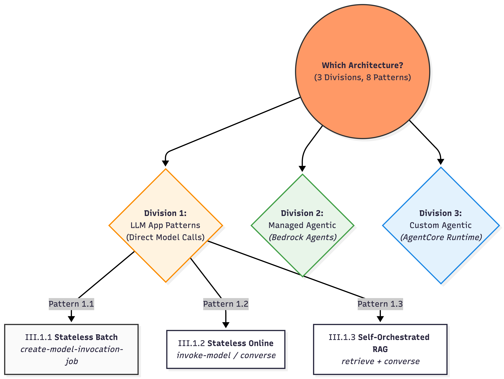
III.1.1) Stateless Batch LLM Calls (Offline / Async workloads)
When to use: High-volume, independent prompts; throughput/cost optimized; results can land later
S3 (JSONL inputs)
│
▼
bedrock.create-model-invocation-job
│
▼
S3 (JSONL outputs)State: No conversational state. Just S3 input + job metadata, receive output
Source: AWS Docs Batch Inference
An Example JSONL Object:
{"modelInput": {"anthropic_version": "bedrock-2023-05-31", "max_tokens": 512, "messages": [{"role": "user", "content": [{"type": "text", "text": "Summarize this ticket: My intemrnet has been down in Chennai for 3 hours."}]}]}, "recordId": "ticket_001"}
{"modelInput": {"anthropic_version": "bedrock-2023-05-31", "max_tokens": 512, "messages": [{"role": "user", "content": [{"type": "text", "text": "Summarize this ticket: I cannot login to the mobile app despite resetting password."}]}]}, "recordId": "ticket_002"}III.1.2) Stateless Online LLM Calls
When to use: Single-turn transformations, classification, summarization
User / App
│
▼
bedrock-runtime.invoke-model or converse
│
▼
ResponseState: - Fully stateless. All context must be sent each call. - Even the converse API is strictly stateless. - Append the previous turn conversations to the --messages array parameter in the next API call.
III.1.3) Self-orchestrated RAG
When to use
- Need deterministic control over the retrieved documents.
User
→ bedrock-agent-runtime.retrieve (KB search)
→ your code filters / trims chunks (custom logic)
→ bedrock-runtime.ConverseStream (LLM + streaming)
→ Token stream → UIKey characteristics
Uses two data planes:
bedrock-agent-runtime.retrieve→ vector search onlybedrock-runtime→ LLM inference
Retrieval and generation are decoupled
State lives in: * Application-managed. History, retrieval results, and prompt assembly live in your application logic (e.g., a Lambda or ECS container).
This is RAG without agents — simple, explicit, and production-friendly.
▓▓▓▓▓▓▓▓▓▓▓▓▓▓▓▓▓▓▓▓▓▓▓▓▓▓▓▓▓▓▓▓▓▓▓▓▓▓▓▓▓▓▓▓▓▓▓▓▓▓▓▓▓▓▓▓▓▓▓▓▓
▓▓▓▓▓▓▓▓▓▓▓▓▓▓▓▓▓▓▓▓▓ End of Sub-Section ▓▓▓▓▓▓▓▓▓▓▓▓▓▓▓▓▓▓▓▓
▓▓▓▓▓▓▓▓▓▓▓▓▓▓▓▓▓▓▓▓▓▓▓▓▓▓▓▓▓▓▓▓▓▓▓▓▓▓▓▓▓▓▓▓▓▓▓▓▓▓▓▓▓▓▓▓▓▓▓▓▓III.2 Managed Agentic App Patterns (Bedrock Agents)
- These patterns use the “Autonomous Being” model
- where AWS manages both the Brain (Planner) and the Body (Memory/Tools).
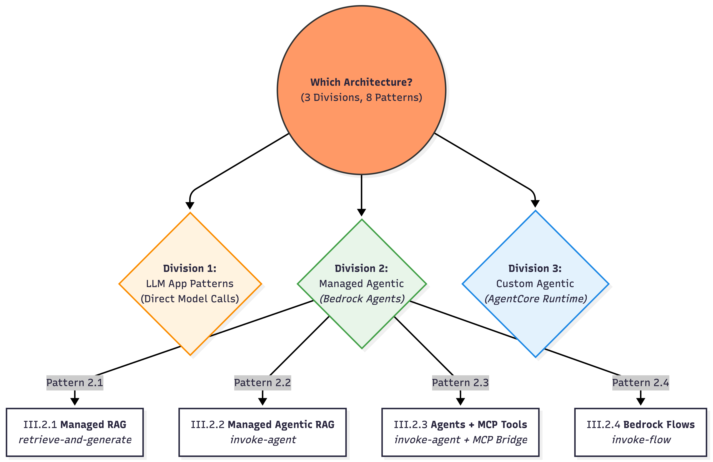
III.2.1) Managed RAG — retrieve-and-generate
The simplest possible RAG that Bedrock offers.
When to use:
* Fast “KB Q&A” with minimal plumbing; a single managed retrieval + answer step is sufficient.
User
→ bedrock-agent-runtime.retrieve-and-generate
├─ Vector search (once)
├─ Prompt assembly (bedrock-managed)
└─ LLM generation
→ ResponseState: Primary knowledge in KB. Use a sessionId to allow the managed service to handle continuity.
III.2.2) AWS Bedrock Managed Agentic RAG
When to use * Need built-in planning + tool use + KB integration + traceability with fastest time-to-value.
User
→ bedrock-agent-runtime.invoke-agent
├─ Agent orchestrates KB + tools
├─ May retrieve multiple times
└─ Event stream (answer + trace)
→ UI- Control Plane: bedrock-agent → configure agent (instructions, action groups, KBs)
- Data Plane: bedrock-agent-runtime (data) → invoke-agent (answer + optional trace)
State lives in: * Agent session context is tied to sessionId and can be shaped via SessionState (session attributes, conversation history, etc.).
Key characteristics
Uses
bedrock-agent-runtime.invoke-agentBedrock owns:
- planning
- retrieval count
- tool invocation
- conversational state
Outputs:
- final answer
- optional reasoning / trace events
Important nuance
- We cannot have fool-proof control how many retrievals happen (possible through prompt instructions)
- Latency can vary per request
- Debugging requires reading traces, not logs
III.2.3) Bedrock Agents + MCP-backed Tools
When to use - When you need your existing AWS-managed Bedrock Agent to connect to MCP compatible servers - When you are ok doing some custom plumbing activities
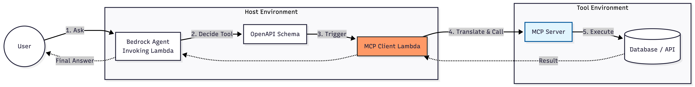
State lives in: * Reasoning/session context in Bedrock Agent via sessionId/SessionState. * Tool/data-side state in external MCP services
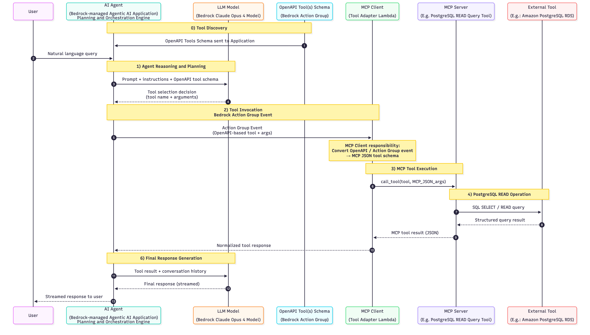
III.2.4) Bedrock Flows
Declarative, managed orchestration for predictable GenAI workflows
User / App
→ bedrock-flow-runtime.invoke-flow
├─ Step 1: Prompt / Model call
├─ Step 2: Conditional logic
├─ Step 3: Retrieval or transform
└─ Step N: Final responseWhen to use * Need a governed, versioned, deterministic pipeline (branching/conditions/iterations) without writing orchestration code.
State Lives In * Execution-Tracked. State is tracked via executionId for the duration of the flow’s run.
▓▓▓▓▓▓▓▓▓▓▓▓▓▓▓▓▓▓▓▓▓▓▓▓▓▓▓▓▓▓▓▓▓▓▓▓▓▓▓▓▓▓▓▓▓▓▓▓▓▓▓▓▓▓▓▓▓▓▓▓▓
▓▓▓▓▓▓▓▓▓▓▓▓▓▓▓▓▓▓▓▓▓ End of Sub-Section ▓▓▓▓▓▓▓▓▓▓▓▓▓▓▓▓▓▓▓▓
▓▓▓▓▓▓▓▓▓▓▓▓▓▓▓▓▓▓▓▓▓▓▓▓▓▓▓▓▓▓▓▓▓▓▓▓▓▓▓▓▓▓▓▓▓▓▓▓▓▓▓▓▓▓▓▓▓▓▓▓▓III.3 Custom Agentic App Patterns (AgentCore)
- You provide the Brain (Planner), AWS provides the Body (Managed Infrastructure).
What is AgentCore?
AgentCore is both framework-agnostic and model-agnostic — deploy and operate AI agents securely at scale using any framework (Strands, CrewAI, LangGraph, LlamaIndex) and any LLM. It eliminates the undifferentiated heavy lifting of building specialized agent infrastructure.
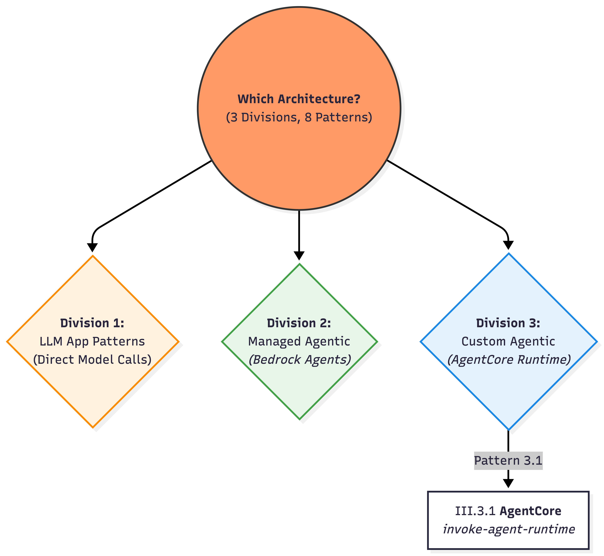
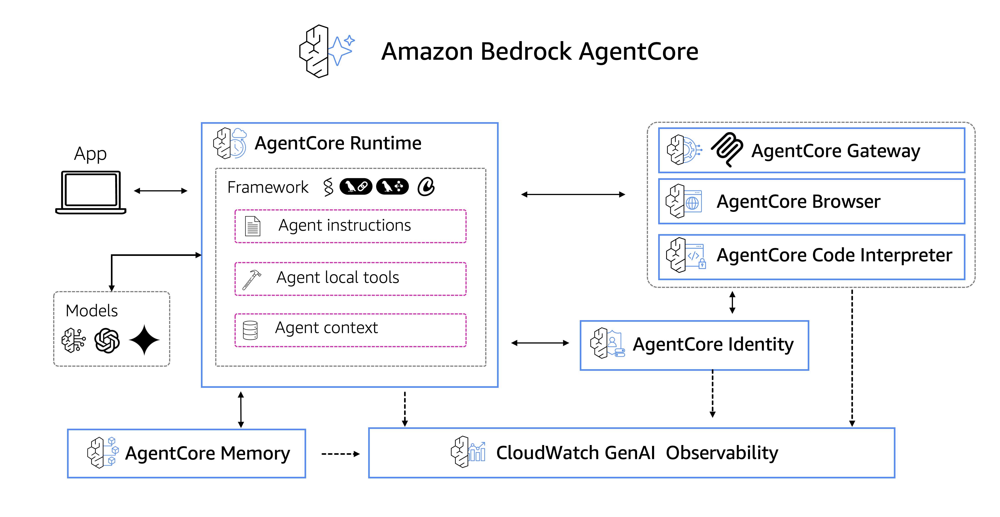
Source: amazon-bedrock-agentcore-samples github repo
AgentCore Components (main ones in my opinion):
| Component | Purpose |
|---|---|
| Runtime | Secure, serverless runtime to deploy agents & tools — any framework, any model |
| Gateway | Convert APIs/Lambda into MCP-compatible tools automatically |
| Identity | Agent identity & access management (Okta, Entra, Cognito) |
| Memory | Managed memory infrastructure for personalized agent experiences |
| Tools | Built-in Code Interpreter & Browser Tool |
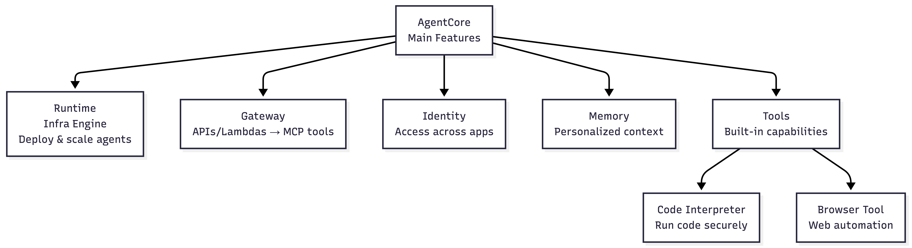
Adapted from amazon-bedrock-agentcore-samples github repo
Gateway: APIs → MCP Tools
AI agents need tools to perform real-world tasks — from searching databases to sending messages. AgentCore Gateway automatically converts APIs, Lambda functions, and existing services into MCP-compatible tools so developers can quickly make these essential capabilities available to agents without managing integrations.
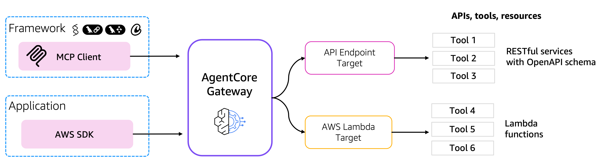
Source: amazon-bedrock-agentcore-samples
Example Architecture:
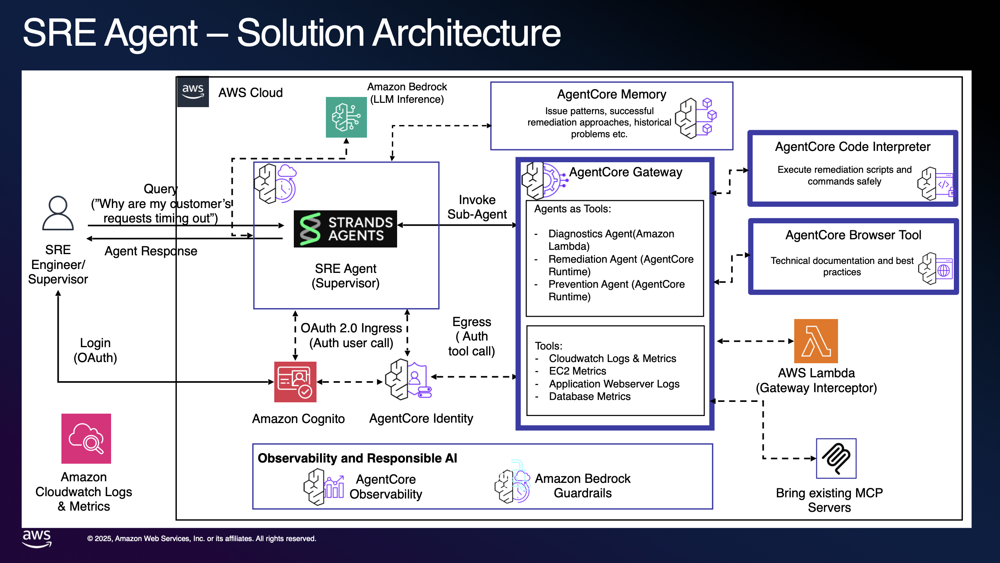
Source: amazon-bedrock-agentcore-samples
III.3.1) AgentCore (Custom Agent Runtime)
When to use
- Need custom agent planners (LangGraph/Strands/custom loops), long-running sessions, strict isolation, custom tools.
- SecOps approved permissions to Agents
User
→ bedrock-agentcore.invoke-agent-runtime
├─ Your planner loop (LangGraph/custom)
├─ Explicit memory read/write
├─ Tool calls (Bedrock Browser/Bedrock Code tool or external tools)
└─ Streaming output
→ UI- Control: bedrock-agentcore-control → deploy runtime/memory/gateway
- Run: bedrock-agentcore (data) → invoke-agent-runtime (session-based)
State: * Externally Managed. State is explicitly persisted and retrieved via bedrock-agentcore APIs
- This is maximum control, at the cost of maximum responsibility.
IV. Guardrails
How Guardrails Work
User Prompt
│
▼
┌───────────────────────────────┐
│ Guardrails — INPUT SCAN │
│ • Topic allow / deny │
│ • Jailbreak patterns │
│ • PII detection (optional) │
└───────────────────────────────┘
│
├─❌ Violates? → Block/Rephrase
▼
┌───────────────────────────────┐
│ Core Model Inference │
└───────────────────────────────┘
│
▼
┌───────────────────────────────┐
│ Guardrails — OUTPUT SCAN │
└───────────────────────────────┘
│
▼
Final ResponseHow Guardrails are enforced in Bedrock Runtime APIs
# process
bedrock-runtime.converse
├─ Guardrail input scan
├─ Model inference
└─ Guardrail output scan# how converse api is invoked with Guardrail
bedrock-runtime.converse
- modelId
- messages
- guardrailIdentifier
- guardrailVersionV. Summary
Three Bedrock Runtime APIs
| API | Key Commands | State |
|---|---|---|
bedrock-runtime |
invoke-model, converse | Stateless — No memory |
bedrock-agent-runtime |
retrieve, invoke-agent | Session-aware — Bedrock-managed |
bedrock-agentcore |
invoke-agent-runtime | Fully stateful — App-owned |
▓▓▓▓▓▓▓▓▓▓▓▓▓▓▓▓▓▓▓▓▓▓▓▓▓▓▓▓▓▓▓▓▓▓▓▓▓▓▓▓▓▓▓▓▓▓▓▓▓▓▓▓▓▓▓▓▓▓▓▓▓Mental Model Recap
| LLM App Pattern | API |
|---|---|
| Stateless Batch | bedrock.create-model-invocation-job |
| Stateless Online | bedrock-runtime.invoke-model/converse |
| Self-orchestrated RAG | retrieve + converse |
▓▓▓▓▓▓▓▓▓▓▓▓▓▓▓▓▓▓▓▓▓▓▓▓▓▓▓▓▓▓▓▓▓▓▓▓▓▓▓▓▓▓▓▓▓▓▓▓▓▓▓▓▓▓▓▓▓▓▓▓▓You have less control here in AWS Managed Bedrock Agents)
| Bedrock Managed 🧠 App Pattern | API |
|---|---|
| Managed RAG | bedrock-agent-runtime.retrieve-and-generate |
| Deterministic Flows | bedrock-agent-runtime.invoke-flow |
| Managed Agents | bedrock-agent-runtime.invoke-agent |
▓▓▓▓▓▓▓▓▓▓▓▓▓▓▓▓▓▓▓▓▓▓▓▓▓▓▓▓▓▓▓▓▓▓▓▓▓▓▓▓▓▓▓▓▓▓▓▓▓▓▓▓▓▓▓▓▓▓▓▓▓You have more control here in AgentCore | AgentCore gives you serverless infra
| Custom Managed 🧠 App Pattern | API |
|---|---|
| Custom AgentCore | * bedrock-agentcore.invoke-agent-runtime |
Each layer trades control for convenience — not capability.
Core Takeaways
AWS Bedrock = Fully managed, serverless service for GenAI apps
API Plane Separation: Control Plane (configure) vs Data Plane (run)
Key Control Plane:
bedrock,bedrock-agent,bedrock-agentcore-controlKey Data Plane:
bedrock-runtime,bedrock-agent-runtime,bedrock-agentcoreIf you are a developer, building beyond PoC, for all things “Agentic AI”, blindly only follow Bedrock AgentCore